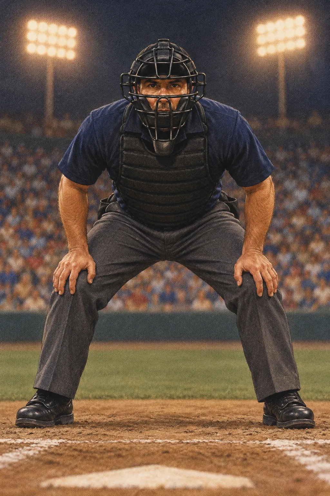

Batter Bats R
vs Pitcher RHP
2026 World Series
Today's TenClose callsClose calls
Ump called it Ball
Today's Ten: real pitches from the 2026 season, at real speed, from the plate umpire's eye.
Still loading. A slow connection can take a while.
Real pitches: %DATA_CREDIT% ABS truth reconstructed from tracking data and matches all 29 real challenges in the Series. Players, field and catch are illustrations.
Round complete.

Miss map
Real pitches: %DATA_CREDIT% ABS truth reconstructed from tracking data and matches all 29 real challenges in the Series. Players, field and catch are illustrations.